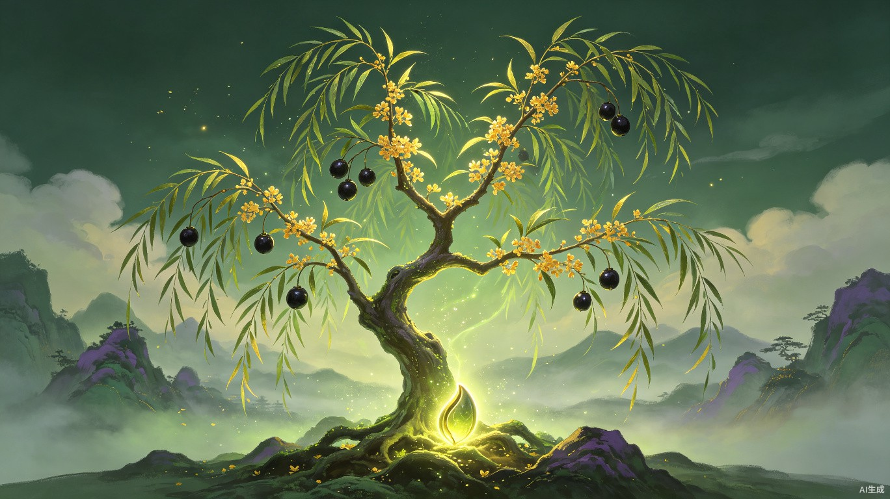
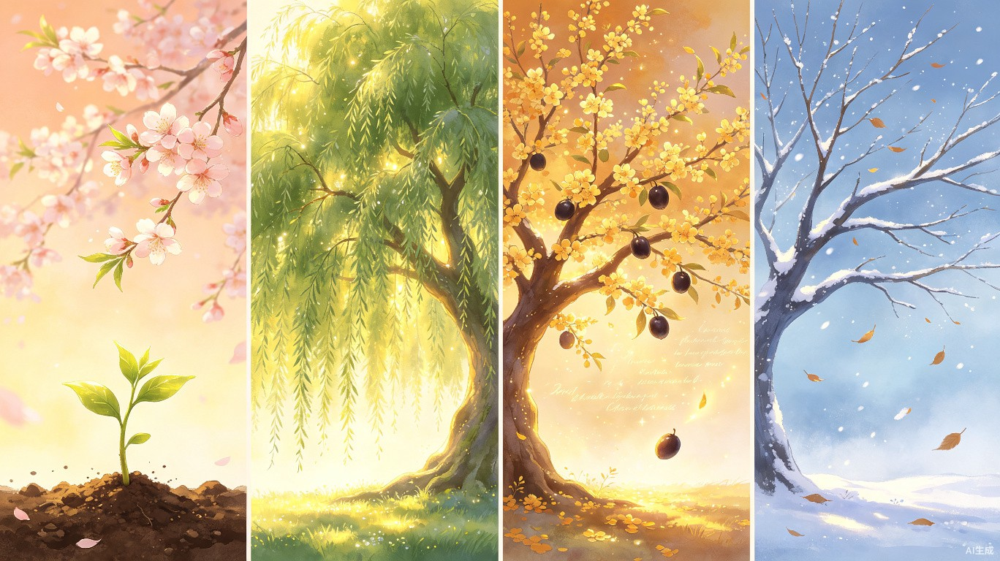
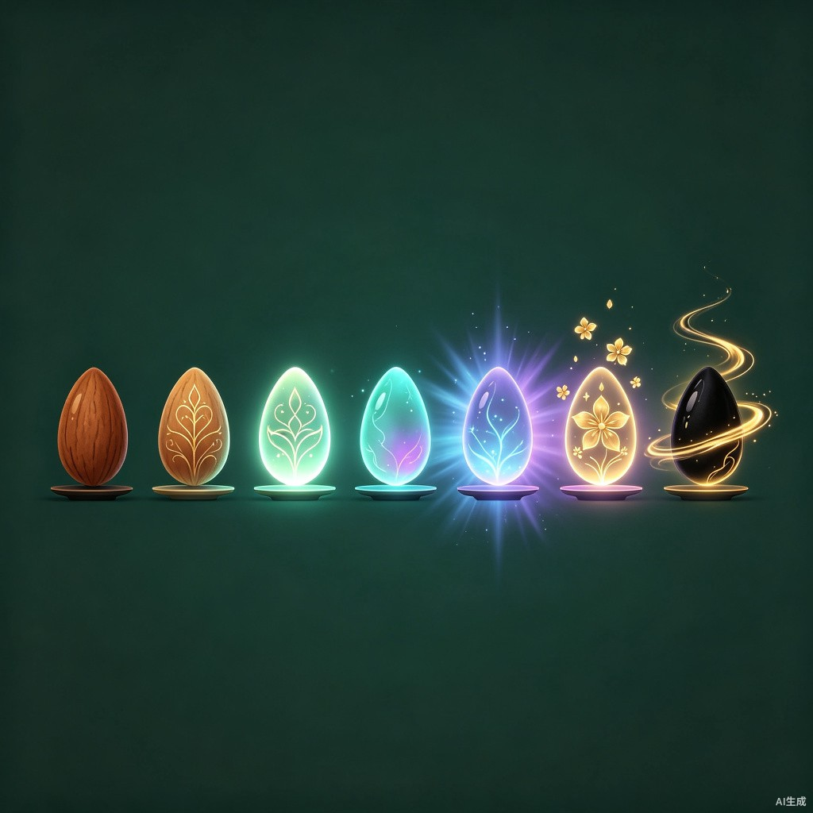

创意名称 + 创意介绍
帝休之树
想解决什么问题
当代人被信息洪流裹挟，焦虑、失眠、情绪困扰已经成为一种普遍的"现代病"。人们需要一个不带偏见、不会泄露、只给予温暖回应的倾诉空间——而社交平台上的倾诉，往往换来评判、传播或冷漠的沉默，反而加重心理负担。
为什么会想到做这个
灵感来自《山海经·中山经》中记载的一棵神树——帝休。
古人相信，服食帝休之果可以解忧安神、平息怒气，因此它又被称为"不愁木"。我们想让这棵来自远古的神树，穿越千年，成为现代人安放心事的地方。
大概是什么产品
一款微信小程序。首页是一颗小小的种子，用户每次倾诉，种子就获得一次"淋肥"，缓缓生长。树经历四季轮回，秋季开花结果，经历约 10 秒的仪式感动画——果实掉落，用户的所有心事碎片浮现后消散，代表"心事已了"。
目标用户及痛点
面向哪些用户
所有在日常生活中积累压力、焦虑、孤独或烦闷情绪，需要一个简单、低门槛的方式倾诉和释放的人。不限定年龄，但对互联网社交有疲劳感、不愿在朋友圈或群聊中暴露真实情绪的人群尤为契合。
在什么场景下使用
深夜辗转难眠时、工作受挫无处诉说时、被负面情绪淹没又不想打扰身边人时、或者仅仅是想把脑子里乱七八糟的念头"扔出去"。打开小程序，写几行字，发送给正在生长的帝休，然后继续面对生活。
当前痛点
心理咨询门槛高
专业心理咨询费用贵、预约难，大多数人还没到"看病"的程度，不需要也承担不起。
社交倾诉有风险
朋友圈、群聊中的倾诉可能被截图传播，带来二次伤害，反而加重负担。
身边人接不住
朋友和家人不是总能接住自己的情绪，甚至可能成为新的压力来源。
沉默越久越重
很多人选择了沉默和自我消化，而沉默久了，问题只会越积越重。
价值与意义
中国有超过 9500 万抑郁症患者，而真正寻求专业帮助的比例极低。大多数人的情绪困扰还没有到"看病"的程度，但如果不及时疏导，就可能一步步滑向更深的困境。
"帝休之树"提供了一个零门槛的情绪出口——不收集用户信息，不做社交传播，不制造新的焦虑。种子由用户的心事淋肥生长，果实掉落时心事碎片消散不复存在。它像一棵沉默而温暖的古树，接纳每一片飘来的心事，用时间和生长来治愈。在信息焦虑蔓延的今天，这样一片安静的角落，本身就是一种善意。
核心设计
四季轮回
用户每次倾诉，等同于给树淋一次肥。由倾诉次数驱动四季变化：
秋季结束时触发约 10 秒的仪式动画——果实掉落，心事碎片短暂浮现后消散，代表"心事已了"。随后进入冬季，树叶缓缓飘落，树进入 24 小时的安静期，之后自然回到新的种子，开启下一轮生长。冬季是果实掉落后的自然过渡，给用户一段情绪恢复期。

春发芽 → 夏茂盛 → 秋结果 → 冬沉静 → 新轮回
种子进化：七轮解锁帝休
每完成一轮四季，种子会发生微妙变化，逐步解锁《山海经》原文中帝休的各个特征。大约 56 次倾诉可解锁全部形态，对于认真使用的用户来说，大约是一到两个月的心路历程。
| 轮次 | 种子形态 | 树的形态 | 解锁特征 |
|---|---|---|---|
| 第 1 轮 | 朴素的褐色种子 | 稚嫩的小苗，两片叶子 | 初始 |
| 第 2 轮 | 表面浮现金色纹路 | 树干变粗，叶片增多 | 生长 |
| 第 3 轮 | 微透青光 | 叶片变成杨叶形态 | 叶状如杨 |
| 第 4 轮 | 青光中透出紫意 | 树干分叉，五枝雏形 | 五枝初现 |
| 第 5 轮 | 散发青紫色柔和光芒 | 五根主枝清晰展开 | 其枝五衢 |
| 第 6 轮 | 光芒中浮现金色花形纹路 | 枝头开出细小黄花 | 黄华 |
| 第 7 轮 | 漆黑如墨，表面流转金色光华，悬浮微转 | 完整帝休：五枝杨叶、黄花满枝、黑实累累 | 黑实 · 帝休现世 |

从朴素褐种到漆黑金光的七轮蜕变
初次体验设计
用户首次打开小程序，看到的是一颗安静的种子和一个输入框。输入框内有一行浅灰色的占位文字："你的心事，是它生长的养分"。种子旁有一个微妙的引导动效：一颗微小的光点从输入框方向缓缓飘向种子，循环一次即消失。没有弹窗，没有说明文字，用户在第一次操作中自然理解机制——心事飞向种子，种子发出微光脉冲，就是"淋肥"的反馈。
隐私与安全
果实掉落时，所有倾诉的文字碎片短暂浮现后消散，之后数据直接删除，不做保留。整个过程不收集用户信息，不做社交传播。倾诉完就真的没了，和树一起"了结"。